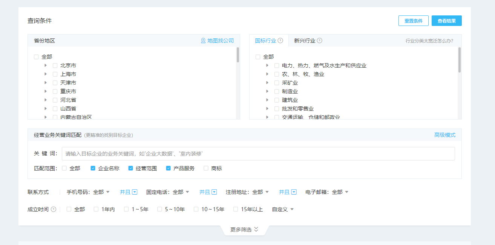
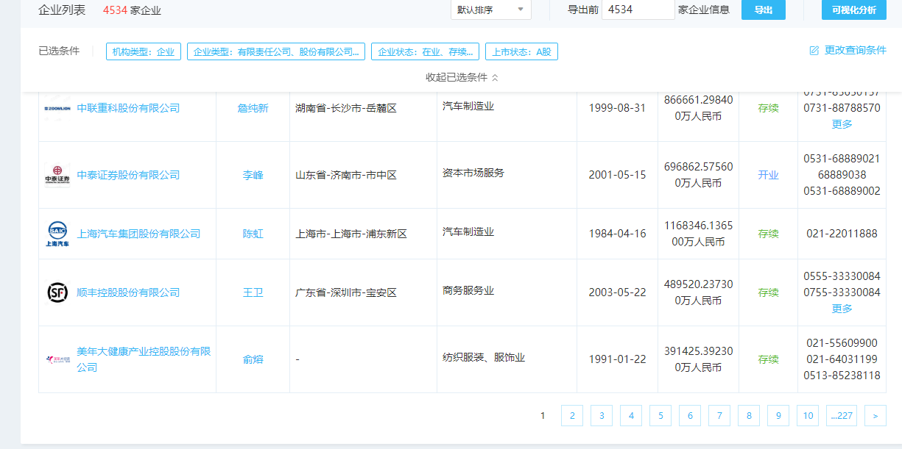

作者: 张延丰
哈工程管工在读博士，擅长数据采集&挖掘。
文末可获取代码下载链接
马云在接受CNBC（美国消费者新闻与商业频道）采访时提出：“整个世界将变成数据，我认为这还是只是数据时代的开始。新浪潮即将来临，很多就业机会将被夺走。有些人会赶上潮流，变得更加富有和成功。但是对于那些落后的人，未来将是痛苦的。”就小编看来，这种说法在人文社科研究当中也同样适用。在当前数以万计甚至数以十万计研究样本“遍地走”的时代，若我们还拘泥于传统的“小样本”研究（比如样本量为100多的调查问卷数据等），不仅难以跟随时代的脚步，还会逐渐丧失学术竞争力、从而被时代淘汰。那么，究竟该如何获取属于自己的大样本数据呢？今天小编就带大家用selenium库来爬取国内某知名第三方企业信息平台（天**）的企业工商信息。
一、自动打开网站页面
首先，数据爬取的第一步是利用selenium库启动浏览器，打开我们的目标网站。部分代码
# @Author : Jacob-ZHANG
import requests,base64
from PIL import Image
import csv,re
from selenium import webdriver
import time,random
#1启动浏览器。
#win
browser=webdriver.Chrome(executable_path='driver/chromedriver.exe')
#mac
#browser=webdriver.Chrome(executable_path='driver/chromedriver')
#2加入这个脚本可以避免被识别
browser.execute_cdp_cmd("Page.addScriptToEvaluateOnNewDocument", {
"source": """
Object.defineProperty(navigator, 'webdriver', {
get: () => undefined
})
""" })
#3延迟10s启动
browser.implicitly_wait(10)
#4利用谷歌浏览器打开目标网页
browser.get('https://pro.xxxxxx.com/searchx')
#5将窗口最大化
browser.maximize_window()
#6给网页一些时间加载
time.sleep(random.randint(1, 2))
...
...
...
非常简单，如下所示。
需要说明的是：
- 第一，selenium库距今已经有近20年的历史，各类网站、浏览器大多都能对它进行识别，因此为了避免被反爬，我可以通过加入上述脚本（#2）来防止网站的识别。
- 第二，因为在完成#4的操作，也即利用浏览器打开网页后，显示的网页页面并非是最大化的窗口，这导致页面元素存在难以定位、从而报错的情况，因此我们在此处加上了窗口最大化的操作（#5）。
- 第三，在以后的操作里，类似#6的代码会频频出现，这主要是因为受限于网速，不得不为网页加载提供更多时间。
二、模拟登陆
天**反扒的第一关便是需要登录才能够查看具体的页面信息。相比于利用复杂JS逆向技术完成登陆而言，利用selenium库模拟人的操作、从而实现网站自动化登陆的做法则显得更为简单易行。从下图来看，我们需要利用selenium库来完成“点击密码登录（切换到密码登录页面，也即下图所示页面）-向账号对话框内输入账号-向密码对话框内输入密码-向验证码对话框内输入验证码-点击登录”等一系列操作后，才能登录到网站的信息页面，获取自己要想的数据。

对于网站的登录我们提供了以下两种方法：一种是自动化登录；另一种则是手动登录。
2.1 自动化登录
首先，我们先来看看较为复杂的自动化登录。要想实现网页的自动化登录，其关键在于利用 「外部力量」 来识别验证码并完成导入。具体而言，我们首先需要定位验证码在网页当中的元素位置，其次利用截图软件根据验证码元素位置来截取验证码图片，再次利用外部库对验证码图片进行识别，最后将识别出的验证码录入对话框。自动化登录的具体过程可以分为 get_code_image函数 和 parse_code函数 两个步骤进行，具体代码如下所示。其中，验证码的解析小编是调用了百度AI的开源库进行的。另外，需要注意的是，利用selenium库打开的登录页面一开始是不显示验证码的，必须向账号框和密码框输入内容以后，它才会显示验证码。因此，对于验证码的识别和录入，我们将它放在了所有操作中的最后部分。
parse_code函数
def parse_code():
#用百度API解析图片
request_url = "https://aip.baidubce.com/rest/2.0/ocr/v1/numbers"
f = open('temp/验证码.png', 'rb')
img = base64.b64encode(f.read())
params = {"image": img}
access_token = '24.a7fbbfb9dcab2e1054cc827f09d09234.2592000.1625930266.282335-19004069'
request_url = request_url + "?access_token=" + access_token
headers = {'content-type': 'application/x-www-form-urlencoded'}
response = requests.post(request_url, data=params, headers=headers)
#得到解析结果
dictionary=response.json()
#得到验证码
yanzhengma=dictionary['words_result'][0]['words']
#录入验证码
browser.find_element_by_xpath('//*[@id="web-content"]/div/div[2]/div[3]/form/div[6]/input').send_keys(yanzhengma)
# 点击登录按钮
time.sleep(random.randint(1, 2))
browser.find_element_by_xpath('//*[@id="web-content"]/div/div[2]/div[3]/form/div[8]').click()
parse_code函数
def get_code_image():
# 1启动浏览器。
browser = webdriver.Chrome()
# 2加入这个脚本可以避免被识别
browser.execute_cdp_cmd("Page.addScriptToEvaluateOnNewDocument", {
"source": """
Object.defineProperty(navigator, 'webdriver', {
get: () => undefined
})
"""})
# 3延迟10s启动
browser.implicitly_wait(10)
# 4利用谷歌浏览器打开目标网页
browser.get('https://pro.xxxxxx.com/searchx')
# 5将窗口最大化
browser.maximize_window()
# 6给网页一些时间加载
time.sleep(random.randint(1, 2))
#将页面从快捷登录切换到密码登录
browser.find_element_by_xpath('//*[@id="web-content"]/div/div[2]/div[3]/div[1]/div[2]').click()
time.sleep(0.5)
#输入账号
browser.find_element_by_xpath('//*[@id="web-content"]/div/div[2]/div[3]/form/div[2]/input').send_keys(
'******')
time.sleep(random.randint(1, 2))
# 输入密码
browser.find_element_by_xpath('//*[@id="web-content"]/div/div[2]/div[3]/form/div[4]/input').send_keys('*******')
time.sleep(random.randint(1, 2))
browser.save_screenshot('temp/屏幕.png')#截图整个页面】
#定位验证码x,y坐标
left_angle=browser.find_element_by_xpath('//*[@id="web-content"]/div/div[2]/div[3]/form/div[6]/img').location
image=browser.find_element_by_xpath('//*[@id="web-content"]/div/div[2]/div[3]/form/div[6]/img')
#获取验证码的长和宽
size=image.size
#设定我们需要截取的位置
rangle = (int(left_angle['x']), int(left_angle['y'] ), int(left_angle['x'] + size['width'] + 230),
int(left_angle['y'] + size['height'] + 300))
#打开截图
open_image=Image.open('temp/屏幕.png')
#从图片中截取我们需要的的区域
jietu=open_image.crop(rangle)
jietu.save('temp/验证码.png')
接下来，我们再来看看如何实现手动登录。相比于自动化登录，手动登录的操作更为简单。具体地，我们只要在完成自动打开网站页面的代码后加入input()函数，然后自己手动向网站的对话框内输入账号、密码、验证码并点击登录，就可以进入到网站的信息页面。
三、获取自己想要的数据
完成登陆之后，就会跳转到如下页面。然后，大家就可以根据自己的目标继续撰写属于自己的“个性化代码”了。下面，小编以获取31个省市的特定类型的企业数据为例，给大家分享一下自己获取数据的过程。

其实，代码撰写的逻辑很简单。首先要做的就是先选中我们要爬取的目标城市。下来就是根据自己的需求来定制个性化的筛选标准。以小编自己的需求为例，先通过点击高级模式，向企业名称对话框里输入关键词，比如医院（当然，大家也可以通过限定行业来挑选目标）；然后，去掉机构类型中已勾选的企业，选择事业单位；接下来，勾选全部企业类型；最后点击查看结果。
至此就完成了筛选，得到了满足我们要求的所有企业（见下图1）。接下来，我们要做的就是遍历每一页里的每一家企业，然后获取企业页面信息（见下图2）中自己想要的数据了。

由于后续代码较长，就不在这里一一列举了。 有需要的小伙伴可以在后台留言，然后向xx索取。
代码下载
对于初学者而言，直接上手可能比较难，建议先收藏本文，待熟练掌握爬虫可以实验本文的代码。
如果想复现本文代码，需熟悉
- python基础语法
- selenium驱动器driver的适配
- 百度api注册
- 涉及开发者工具xpath定位
本文教程&代码免费分享，但作者时间和精力宝贵，无法做到一一指导，尽请包涵。
代码链接: https://pan.baidu.com/s/1VmNoTN8hFRCBI9g770mUCw 提取码: ob2j